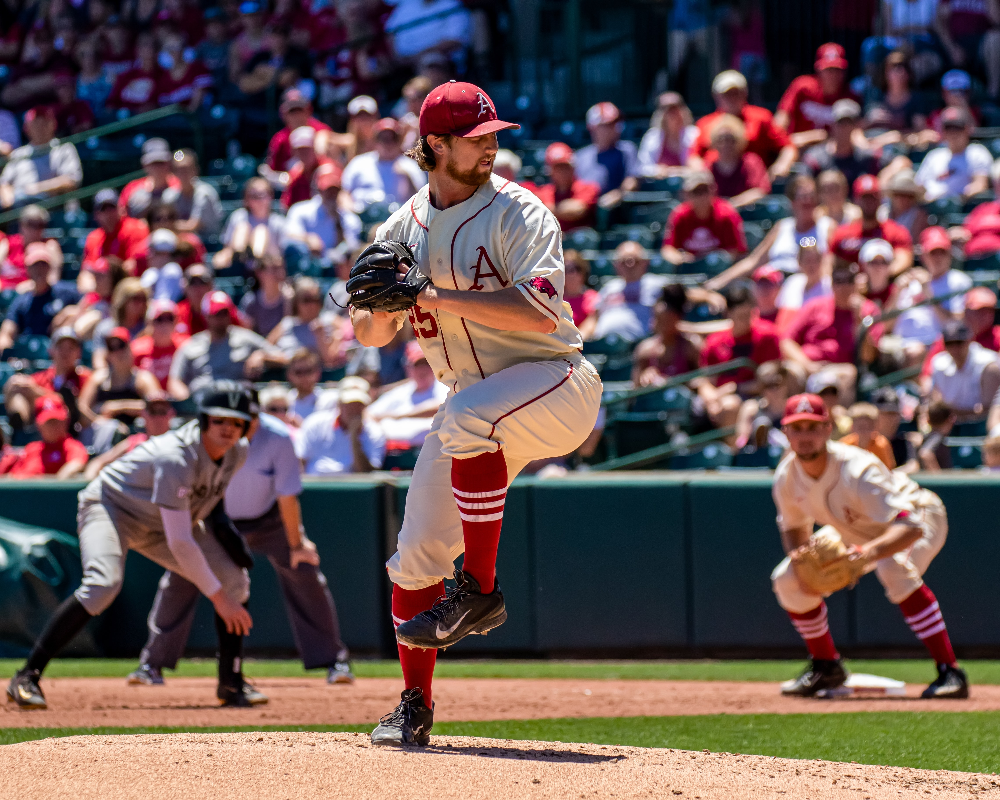

Baseball is a bat-and-ball sport played between two teams of nine players each, taking turns batting and fielding. The game occurs over the course of several plays, with each play generally beginning when a player on the fielding team, called the pitcher, throws a ball that a player on the batting team, called the batter, tries to hit with a bat. The objective of the offensive team (batting team) is to hit the ball into the field of play, away from the other team's players, allowing its players to run the bases, having them advance counter-clockwise around four bases to score what are called "runs". The objective of the defensive team (referred to as the fielding team) is to prevent batters from becoming runners, and to prevent runners' advance around the bases. A run is scored when a runner legally advances around the bases in order and touches home plate (the place where the player started as a batter).

The principal objective of the batting team is to have a player reach first base safely; this generally occurs either when the batter hits the ball and reaches first base before an opponent retrieves the ball and touches the base, or when the pitcher persists in throwing the ball out of the batter's reach. Players on the batting team who reach first base without being called "out" can attempt to advance to subsequent bases as a runner, either immediately or during teammates' turns batting. The fielding team tries to prevent runs by getting batters or runners "out", which forces them out of the field of play. The pitcher can get the batter out by throwing three pitches which result in strikes, while fielders can get the batter out by catching a batted ball before it touches the ground, and can get a runner out by tagging them with the ball while the runner is not touching a base. The opposing teams switch back and forth between batting and fielding; the batting team's turn to bat is over once the fielding team records three outs. One turn batting for each team constitutes an inning. A game is usually composed of nine innings, and the team with the greater number of runs at the end of the game wins. Most games end after the ninth inning, but if scores are tied at that point, extra innings are usually played. Baseball has no game clock.
Baseball evolved from older bat-and-ball games already being played in England by the mid-18th century. This game was brought by immigrants to North America, where the modern version developed. Baseball's American origins, as well as its reputation as a source of escapism during troubled points in American history such as the American Civil War and the Great Depression, have led the sport to receive the moniker of "America's Pastime"; since the late 19th century, it has been unofficially recognized as the national sport of the United States, though in modern times is considered less popular than other sports, such as American football. In addition to North America, baseball is considered the most popular sport in parts of Central and South America, the Caribbean, and East Asia, particularly in Japan, South Korea, and Taiwan.
In Major League Baseball (MLB), the highest level of professional baseball in the United States and Canada, teams are divided into the National League (NL) and American League (AL), each with three divisions: East, West, and Central. The MLB champion is determined by playoffs that culminate in the World Series. The top level of play is similarly split in Japan between the Central and Pacific Leagues and in Cuba between the West League and East League. The World Baseball Classic, organized by the World Baseball Softball Confederation, is the major international competition of the sport and attracts the top national teams from around the world. Baseball was played at the Olympic Games from 1992 to 2008, and was reinstated in 2020.